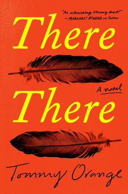
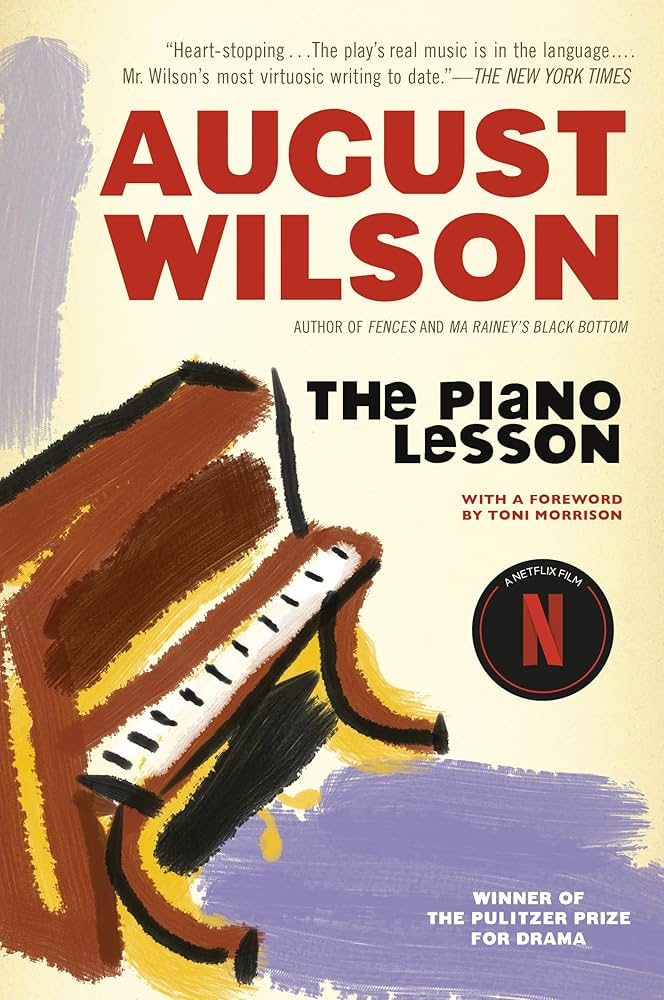

Key Ideas
Our goal with this project was to show how objects, not just ghosts, can link the past to the present and even future in a way that resembles haunting.
Whether it's through talk-story, cycles of violence, or a family heirloom, these objects all link the past to the present in some way.
Notably, in line with what Avery Gordon argued in her definition of haunting, these objects serve as means to incite transformation in one or many. Talk-stories transform Maxine, bullets alter the lives of every Native at the powwow but specifically trasnformed Tony, and the Piano transformed both Berniece and Boy Willie.